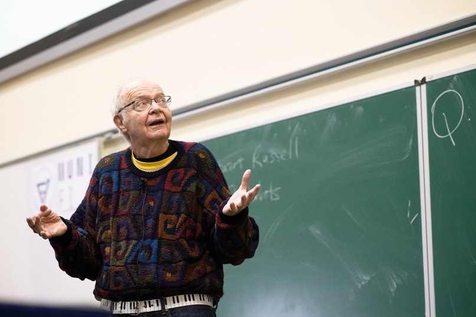

Признание
На январь 2013 года Кнут занимал 37-е место в списке самых цитируемых авторов в области информатики согласно проекту CiteSeer[9]. Член редакционных коллегий многих научных журналов. Действительный член Американской академии искусств и наук (1973), Национальной академии наук США (1975)[10], Национальной инженерной академии США (1981)[11]. Член Американской гильдии органистов (с 1965 года), Американского математического общества (1961), Ассоциации компьютерной техники (ACM) (1959), Математической ассоциации Америки (1959), Общества промышленной и прикладной математики (1965), действительный член Британского компьютерного общества (1980), почётный член IEEE (1982). Иностранный член Лондонского королевского общества (2003)[12], Российской академии наук (29 мая 2008)[13][14]. Почётный доктор многих университетов. Почётный доктор СПбГУ (1992).